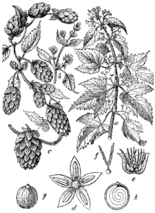
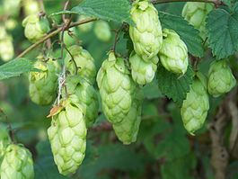

|
Хмель (лат. Húmulus) — род цветковых растений семейства Коноплёвые. Включает в себя два вида. Кроме настоящего хмеля, иногда так называют некоторые другие вьющиеся растения, например: Княжик (Atragene L.), Вьюнок (Convolvulus L.), Луносемянник (Menispermum L.), а также некоторые низкорослые травы, соцветия которых напоминают женские соцветия хмеля, например, Клевер посевной (Trifolium agrarium L.) и Чёрноголовка обыкновенная (Prunella vulgaris L.) Происхождение названия растения сводится к восточной версии (чувашский хăмла) и западной версии (германские языки), например, в ср. нов.-в.-н. hummeln — «шарить, ощупывать». По другим данным, это латинизированное славянское или голландское название хмеля. Травянистые двудомные растения, вьющиеся вверх по часовой стрелке, с супротивными дланевидными листьями, с межчерешковыми прилистниками.Мужские соцветия на ветвях второго порядка в виде сложной метёлки, состоящей из дихазиев, переходящих в завитки. Мужской цветок с 5-листным околоцветником и 5 тычинками с прямыми нитями. Женские цветки в шишковидных сложных соцветиях. Чешуи шишек, расположенные попарно, представляют прилистники неразвившихся листьев, в пазухе которых находятся двойные завитки, из 2—4 или 6 цветков, без цветков первого порядка. Находящиеся при цветках прицветники при плодах разрастаются и несут желёзки, содержащие лупулин. Женские цветки состоят из пестика, у основания окружённого плёнчатым цельнокрайним чашевидным околоцветником. Плод — орех со спирально свёрнутым зародышем. Цветет в июле — августе, плодоносит в августе — сентябре. |
 Хмель обыкновенный. Ботаническая иллюстрация из книги Мартина Циленшека (словенск.)русск. Naše škodljive rastline, 1892.  |